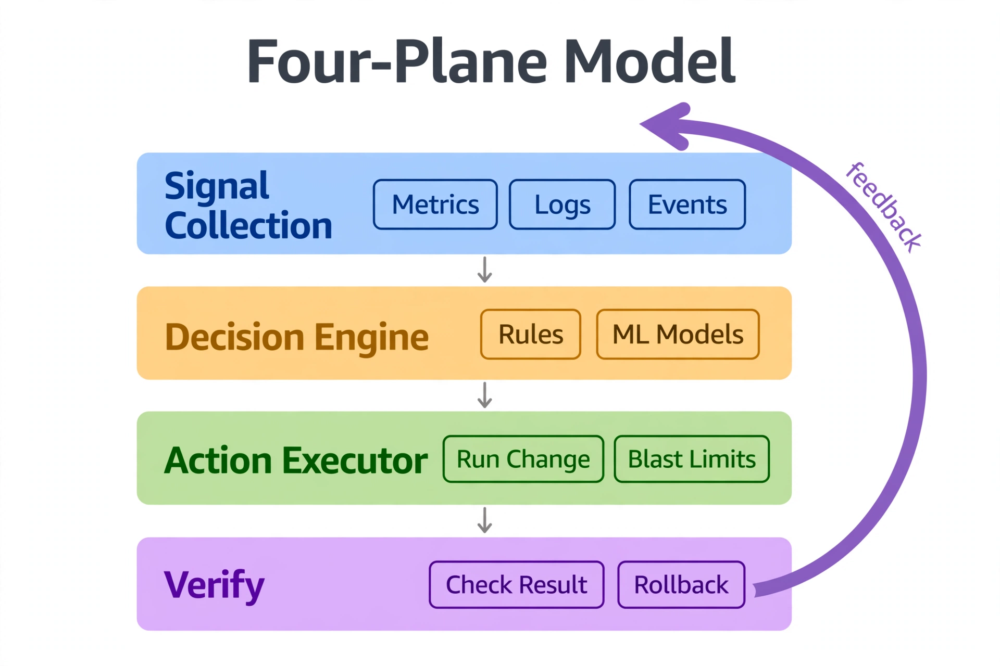

Chapter 38: Building Your Own Autonomous DBA Framework
The frameworks sold by cloud vendors as "autonomous databases" are black boxes — they observe, decide, and act within walls you cannot see, modify, or extend. For engineering teams running SQL Server on their own infrastructure, in hybrid clouds, or across multi-tenant platforms, the only viable path to genuine autonomy is a purpose-built framework: one that you design, own, and can interrogate at every layer. This chapter closes the loop on everything covered so far by showing you how to assemble a complete Autonomous DBA Framework (ADF) — the signal collection layer, the decision engine, the action executor, the feedback loop, and the governance model that keeps the whole system from acting on bad data. What you build here is not a monitoring dashboard with alerts. It is a control system.
38.1 Framework Architecture: The Four-Plane Model

Read it top to bottom, then follow the purple arrow back up. The blue Signal Collection plane gathers metrics, logs, and events — the raw material. The amber Decision Engine turns signals into proposed actions through rules and ML models. The green Action Executor carries out the approved change, but inside blast-radius limits that cap what any single action can touch. The purple Verify plane checks the result against the expected outcome and can roll back. The feedback loop is what makes it a system rather than a pipeline: every outcome, good or bad, becomes new signal. The key insight: autonomy without the verify plane and the feedback loop is just automation with confidence — the loop is what lets the framework learn instead of merely repeat.
Every production-grade autonomous system separates concerns into distinct operational planes. Conflating them is the most common reason autonomous frameworks fail in practice — the decision engine starts making choices based on stale telemetry, or the action executor fires while governance checks are disabled. The four planes are: Observe, Decide, Act, and Verify.
Observe is the telemetry plane. It continuously collects metrics, query fingerprints, wait event data, replication lag, storage growth curves, connection pool saturation, and slow query logs. The observability plane must be stateful — not just streaming point-in-time values, but maintaining windowed aggregates, trend slopes, and anomaly baselines.
Decide is the inference plane. It consumes normalized signals from the Observe plane and produces action proposals with confidence scores and rollback parameters. This plane contains the rule engine, the ML scoring layer if one is deployed, and the external LLM integration for natural-language reasoning on ambiguous states.
Act is the execution plane. It receives approved action proposals, serializes them into safe execution windows, calls the actual database APIs, Kubernetes operators, or shell scripts, and emits structured execution logs.
Verify is the validation plane. After every action, it re-queries the affected system to confirm that the intended effect occurred, measures whether the root signal improved, and feeds the outcome back into the Decide plane as training signal.
*The four-plane loop: signals flow forward from Observe through Decide and Act, while Verify closes the loop by feeding measured outcomes back into the Decide plane.*
The critical design rule: no plane writes directly to another plane's data store. Each plane has its own schema or topic namespace. Cross-plane communication happens through a message bus — Kafka, NATS, or even a dedicated schema acting as a persistent queue. This prevents race conditions and makes the entire system auditable.
38.2 Building the Signal Collection Layer for SQL Server
The signal layer must be purpose-built for autonomous decision-making, not repurposed from a monitoring stack. The difference is semantic richness. A monitoring stack answers "is something wrong?" The ADF signal layer answers "what specifically changed, how fast, and what does historical context say about it?"
For SQL Server, the primary sources are Query Store, sys.dm_exec_requests, sys.dm_hadr_database_replica_states, sys.dm_db_index_physical_stats, sys.dm_os_performance_counters, and Extended Events sessions. These are extended with a custom collector that computes derived signals:
-- Autonomous signal collection: combined health snapshot for decision engine
-- Run via SQL Agent job every 60 seconds or captured by external collector
CREATE OR ALTER VIEW adf.SqlSignalSnapshot AS
SELECT
GETUTCDATE() AS collected_at,
-- Query pressure
(SELECT COUNT(*) FROM sys.dm_exec_requests r
WHERE r.wait_type LIKE 'LCK%') AS active_lock_waiters,
(SELECT COUNT(*) FROM sys.dm_exec_requests r
WHERE r.status = 'running'
AND r.total_elapsed_time > 30000) AS long_running_queries,
-- AG replication lag (ms)
(SELECT ISNULL(MAX(secondary_lag_seconds * 1000), 0)
FROM sys.dm_hadr_database_replica_states
WHERE is_primary_replica = 0) AS max_replication_lag_ms,
-- Buffer cache hit ratio (from ring buffer counters)
(SELECT ROUND(
cntr_value * 100.0 /
NULLIF((SELECT cntr_value FROM sys.dm_os_performance_counters
WHERE counter_name = 'Buffer cache hit ratio base'
AND object_name LIKE '%Buffer Manager%'), 0), 2)
FROM sys.dm_os_performance_counters
WHERE counter_name = 'Buffer cache hit ratio'
AND object_name LIKE '%Buffer Manager%') AS buffer_hit_ratio,
-- Plan cache pressure
(SELECT COUNT(*) FROM sys.dm_exec_cached_plans
WHERE usecounts = 1
AND objtype = 'Adhoc') AS single_use_plan_count,
-- Connection saturation
(SELECT ROUND(COUNT(*) * 100.0 /
(SELECT value_in_use FROM sys.configurations
WHERE name = 'max connections'), 2)
FROM sys.dm_exec_sessions
WHERE is_user_process = 1) AS connection_saturation_pct,
-- TempDB pressure
(SELECT ROUND(SUM(unallocated_extent_page_count) * 8.0 /
1024, 2)
FROM sys.dm_db_file_space_usage
WHERE database_id = 2) AS tempdb_free_mb;These snapshots are written to a time-series store — InfluxDB, Azure Monitor, or a dedicated adf.signal_history partitioned table — every 60 seconds. The Decide plane reads windowed aggregates, not raw point values. A single spike in active_lock_waiters is noise. A 10-minute rolling average above 15 with an upward slope of 2 per minute is a signal that requires action.
The slope calculation, critical for distinguishing transient spikes from sustained degradation, is computed in the collector:
# signal_processor.py — slope-based anomaly gate
# Runs inside the ADF collector pod; ingests raw snapshot rows
import numpy as np
from dataclasses import dataclass
from typing import List
@dataclass
class SignalWindow:
metric_name: str
values: List[float] # ordered oldest → newest, 10-minute window at 60s intervals
threshold: float
slope_threshold: float # units/minute to trigger concern
def evaluate_signal(window: SignalWindow) -> dict:
n = len(window.values)
if n < 3:
return {"signal": window.metric_name, "action_required": False, "reason": "insufficient_data"}
x = np.arange(n, dtype=float)
slope, intercept = np.polyfit(x, window.values, 1)
slope_per_minute = slope # values collected every 60s, so slope is already per-minute
current_value = window.values[-1]
rolling_mean = float(np.mean(window.values))
action_required = (
current_value > window.threshold
and slope_per_minute > window.slope_threshold
)
return {
"signal": window.metric_name,
"current_value": round(current_value, 4),
"rolling_mean": round(rolling_mean, 4),
"slope_per_minute": round(slope_per_minute, 4),
"threshold": window.threshold,
"slope_threshold": window.slope_threshold,
"action_required": action_required,
"confidence": round(min(abs(slope_per_minute / window.slope_threshold), 1.0), 3)
}
# Example usage
lock_waiter_window = SignalWindow(
metric_name="active_lock_waiters",
values=[4, 5, 6, 9, 12, 15, 18, 22, 26, 31],
threshold=10.0,
slope_threshold=2.0
)
result = evaluate_signal(lock_waiter_window)
# {"signal": "active_lock_waiters", "current_value": 31.0,
# "rolling_mean": 14.8, "slope_per_minute": 3.0, "action_required": True, "confidence": 1.0}The confidence score becomes the first field read by the Decide plane's priority queue. Signals with confidence below 0.4 are logged but never promoted to action proposals without human review.
38.3 Designing the Decision Engine: Rules, Scoring, and LLM Escalation
The decision engine is where most ADF implementations fail. Teams either build a flat list of if-then rules that becomes unmaintainable, or they over-rely on a black-box ML model that cannot explain its reasoning to a post-incident review board. The right architecture is a three-tier decision stack: deterministic rules at the base, statistical scoring in the middle, and LLM reasoning at the escalation tier.
Tier 1 — Deterministic Rules handle everything that has a known, safe, reversible response. Index fragmentation remediation, connection pool scaling, index creation on clearly missing indexes (where the planner's estimated rows scanned exceeds 50% of the table and a covering index is provably applicable), and failover initiation when primary health checks fail for more than 90 seconds. These rules fire with 100% confidence and no external consultation.
Tier 2 — Statistical Scoring handles situations where the correct action depends on context that changes over time: query plan regression detection, adaptive memory grant sizing, AG secondary promotion decisions under partial redo lag. A lightweight gradient boosted model trained on historical incident/resolution pairs scores each action proposal from 0.0 to 1.0. Proposals scoring above 0.8 proceed automatically. Proposals scoring 0.5–0.8 require Tier 3 review.
Tier 3 — LLM Escalation handles novel states that neither the rule base nor the scoring model has seen before. The LLM receives a structured context packet and proposes an action with reasoning. A human operator reviews LLM-proposed actions during business hours; outside business hours, the system can execute with a human_override_window flag set and a rollback procedure pre-staged.
The decision engine's core routing logic:
# decision_engine.py — action proposal router
# Consumes from the signal bus, emits to the action queue
import json
import logging
from enum import Enum
from typing import Optional
from dataclasses import dataclass, field
logger = logging.getLogger("adf.decide")
class ActionTier(Enum):
DETERMINISTIC = 1
STATISTICAL = 2
LLM_ESCALATION = 3
HUMAN_REQUIRED = 4
@dataclass
class ActionProposal:
signal_name: str
proposed_action: str
action_params: dict
confidence: float
tier: ActionTier
rollback_procedure: str
estimated_impact: str # "low" | "medium" | "high"
approved: bool = False
llm_reasoning: Optional[str] = None
tags: list = field(default_factory=list)
DETERMINISTIC_RULES = {
"active_lock_waiters": {
"threshold": 20,
"action": "identify_and_kill_blocking_head",
"params_query": "SELECT TOP 1 blocking_session_id AS blocking_pid FROM sys.dm_exec_requests WHERE blocking_session_id <> 0",
"rollback": "no_rollback_required",
"impact": "low"
},
"fragmented_indexes": {
"threshold": 5,
"action": "rebuild_fragmented_indexes",
"params_query": "SELECT TOP 3 OBJECT_NAME(object_id) AS idx_owner FROM sys.dm_db_index_physical_stats(DB_ID(), NULL, NULL, NULL, 'LIMITED') WHERE avg_fragmentation_in_percent > 30",
"rollback": "no_rollback_required",
"impact": "low"
},
"connection_saturation_pct": {
"threshold": 85.0,
"action": "scale_connection_pool_size",
"params": {"increment_pct": 20, "max_pool_size": 500},
"rollback": "revert_pool_config_to_previous",
"impact": "medium"
},
"max_replication_lag_bytes": {
"threshold": 536870912, # 512 MB
"action": "pause_non_critical_batch_writes",
"params": {"tag": "batch_etl", "pause_minutes": 10},
"rollback": "resume_batch_writes",
"impact": "medium"
}
}
def route_signal(signal_result: dict, ml_scorer=None, llm_client=None) -> ActionProposal:
name = signal_result["signal"]
value = signal_result["current_value"]
confidence = signal_result["confidence"]
# Tier 1: Deterministic
if name in DETERMINISTIC_RULES:
rule = DETERMINISTIC_RULES[name]
if value >= rule["threshold"]:
proposal = ActionProposal(
signal_name=name,
proposed_action=rule["action"],
action_params=rule.get("params", {}),
confidence=confidence,
tier=ActionTier.DETERMINISTIC,
rollback_procedure=rule["rollback"],
estimated_impact=rule["impact"],
approved=True # Deterministic rules auto-approve
)
logger.info(f"TIER1 auto-approved: {proposal.proposed_action} for {name}={value}")
return proposal
# Tier 2: Statistical
if ml_scorer and confidence >= 0.4:
ml_score = ml_scorer.score(signal_result)
if ml_score >= 0.8:
proposal = ActionProposal(
signal_name=name,
proposed_action=ml_scorer.recommend_action(signal_result),
action_params=ml_scorer.recommend_params(signal_result),
confidence=ml_score,
tier=ActionTier.STATISTICAL,
rollback_procedure=ml_scorer.rollback_procedure(signal_result),
estimated_impact="medium",
approved=True
)
logger.info(f"TIER2 auto-approved (score={ml_score}): {proposal.proposed_action}")
return proposal
# Tier 3: LLM Escalation
if llm_client and confidence >= 0.5:
reasoning = llm_client.reason(signal_result)
proposal = ActionProposal(
signal_name=name,
proposed_action=reasoning["proposed_action"],
action_params=reasoning["params"],
confidence=reasoning["confidence"],
tier=ActionTier.LLM_ESCALATION,
rollback_procedure=reasoning["rollback"],
estimated_impact=reasoning["impact"],
approved=False, # Requires human or after-hours policy check
llm_reasoning=reasoning["reasoning_text"]
)
logger.warning(f"TIER3 LLM proposal staged for approval: {proposal.proposed_action}")
return proposal
# No action — insufficient confidence
return ActionProposal(
signal_name=name,
proposed_action="no_action",
action_params={},
confidence=confidence,
tier=ActionTier.HUMAN_REQUIRED,
rollback_procedure="n/a",
estimated_impact="unknown",
approved=False,
tags=["low_confidence", "manual_review"]
)The LLM integration for Tier 3 uses a structured prompt template that includes: the signal name and value, the last five actions taken for similar signals, the current time window (business hours vs. maintenance window), and an explicit instruction to produce a JSON-structured response with proposed_action, params, rollback, impact, and reasoning_text fields. Never pass raw database contents to an external LLM. Pass only anonymized metric values and signal names.
For SQL Server environments running AG-backed multi-site deployments, the decision engine must include a quorum gate — before any action that touches replication topology (promoting a secondary, pausing log shipping, changing availability mode), the engine checks that it holds a majority vote across AG nodes. This prevents split-brain decision scenarios where two ADF instances simultaneously propose conflicting topology changes.
-- Quorum gate check: confirm majority AG nodes are reachable before topology actions
-- Returns 1 if safe to proceed, 0 if quorum is insufficient
CREATE OR ALTER FUNCTION adf.fn_QuorumSafe()
RETURNS BIT
AS
BEGIN
DECLARE @total_nodes INT, @healthy_nodes INT, @quorum_safe BIT;
SELECT @total_nodes = COUNT(*)
FROM sys.availability_replicas;
SELECT @healthy_nodes = COUNT(*)
FROM sys.dm_hadr_availability_replica_states ars
JOIN sys.availability_replicas ar ON ars.replica_id = ar.replica_id
WHERE ars.is_local = 0
AND ars.connected_state = 1 -- CONNECTED
AND ars.operational_state = 2; -- ONLINE
-- Include local node
SET @healthy_nodes = @healthy_nodes + 1;
SET @quorum_safe = CASE
WHEN @healthy_nodes > (@total_nodes / 2) THEN 1
ELSE 0
END;
RETURN @quorum_safe;
END;
-- Usage inside action gate
IF adf.fn_QuorumSafe() = 0
BEGIN
INSERT INTO adf.ActionBlockLog (blocked_at, reason, action_attempted)
VALUES (GETUTCDATE(), 'quorum_insufficient', 'topology_change');
RAISERROR('ADF: Topology action blocked — quorum not satisfied', 16, 1);
RETURN;
END38.4 The Action Executor: Safe Execution, Blast Radius Limits, and Rollback Contracts
An action executor without blast radius controls is not an autonomous system — it is a liability. Every action the executor takes must be bounded by four contracts: scope (which objects are touched), reversibility (can this be undone within 60 seconds), concurrency limit (no more than N actions active simultaneously across all targets), and cooldown (after any action on a target, that target is locked for a configurable interval before another action can fire).
The executor is implemented as a finite state machine. Each action proposal enters as PENDING, transitions to STAGED during parameter validation, to EXECUTING during the actual database call, to COMPLETED or FAILED, and finally to VERIFIED after the Verify plane confirms the outcome. Any transition to FAILED immediately triggers the rollback contract.
The most operationally important actions for SQL Server environments — and the ones where incorrect execution causes the most damage — are index creation, configuration parameter changes, and connection pool resizing. All three must execute through change-controlled wrappers:
-- ADF executor wrapper: safe online index creation with blast radius guard
-- Uses ONLINE = ON to minimize blocking; defers if table exceeds size threshold
CREATE OR ALTER PROCEDURE adf.exec_CreateIndexSafe
@TableName NVARCHAR(256),
@Columns NVARCHAR(512),
@IndexName NVARCHAR(128),
@ProposalId UNIQUEIDENTIFIER
AS
BEGIN
SET NOCOUNT ON;
DECLARE @TableSizeMB DECIMAL(18,2);
DECLARE @IndexSQL NVARCHAR(MAX);
DECLARE @StartTime DATETIME2 = SYSUTCDATETIME();
DECLARE @CooldownCount INT;
-- Blast radius check: refuse if table > 100 GB without explicit override
SELECT @TableSizeMB = SUM(a.total_pages) * 8.0 / 1024
FROM sys.tables t
JOIN sys.indexes i ON t.object_id = i.object_id
JOIN sys.partitions p ON i.object_id = p.object_id AND i.index_id = p.index_id
JOIN sys.allocation_units a ON p.partition_id = a.container_id
WHERE t.name = PARSENAME(@TableName, 1)
AND OBJECT_SCHEMA_NAME(t.object_id) = ISNULL(PARSENAME(@TableName, 2), SCHEMA_NAME());
IF @TableSizeMB > 102400
BEGIN
UPDATE adf.ActionProposals
SET status = 'BLOCKED',
BlockReason = 'table_exceeds_blast_radius_100gb',
UpdatedAt = SYSUTCDATETIME()
WHERE ProposalId = @ProposalId;
RAISERROR('ADF: Index build blocked — table %s is %.0f MB (>100GB limit)', 16, 1,
@TableName, @TableSizeMB);
RETURN;
END
-- Cooldown check: no actions on this table in the last 30 minutes
SELECT @CooldownCount = COUNT(*)
FROM adf.ActionHistory
WHERE TargetObject = @TableName
AND CompletedAt > DATEADD(MINUTE, -30, SYSUTCDATETIME())
AND Status IN ('COMPLETED', 'FAILED');
IF @CooldownCount > 0
BEGIN
UPDATE adf.ActionProposals
SET Status = 'DEFERRED', BlockReason = 'target_in_cooldown'
WHERE ProposalId = @ProposalId;
RAISERROR('ADF: Action deferred — %s is in cooldown window', 16, 1, @TableName);
RETURN;
END
-- Build and execute with ONLINE = ON to avoid blocking production reads/writes
SET @IndexSQL = N'CREATE INDEX ' + QUOTENAME(@IndexName)
+ N' ON ' + @TableName
+ N' (' + @Columns + N')'
+ N' WITH (ONLINE = ON, SORT_IN_TEMPDB = ON);';
UPDATE adf.ActionProposals
SET Status = 'EXECUTING', StartedAt = SYSUTCDATETIME()
WHERE ProposalId = @ProposalId;
BEGIN TRY
EXEC sp_executesql @IndexSQL;
UPDATE adf.ActionProposals
SET Status = 'COMPLETED', CompletedAt = SYSUTCDATETIME()
WHERE ProposalId = @ProposalId;
INSERT INTO adf.ActionHistory
(ProposalId, TargetObject, ActionType, ExecutedAt, CompletedAt, Status)
VALUES
(@ProposalId, @TableName, 'CREATE_INDEX_ONLINE',
@StartTime, SYSUTCDATETIME(), 'COMPLETED');
END TRY
BEGIN CATCH
UPDATE adf.ActionProposals
SET Status = 'FAILED',
FailureReason = ERROR_MESSAGE(),
CompletedAt = SYSUTCDATETIME()
WHERE ProposalId = @ProposalId;
INSERT INTO adf.ActionHistory
(ProposalId, TargetObject, ActionType, ExecutedAt, CompletedAt, Status, FailureReason)
VALUES
(@ProposalId, @TableName, 'CREATE_INDEX_ONLINE',
@StartTime, SYSUTCDATETIME(), 'FAILED', ERROR_MESSAGE());
THROW;
END CATCH
END;The cooldown and blast radius parameters are not hardcoded constants — they live in an adf.executor_policy table that can be updated without redeploying the framework. Different tables, different schemas, and different environments (production vs. staging) carry different policies. A table tagged tier=critical might have a 4-hour cooldown and a 10 GB blast radius limit. A table tagged tier=archive might have a 5-minute cooldown and no size limit at all.
CREATE TABLE adf.ExecutorPolicy (
PolicyId INT IDENTITY PRIMARY KEY,
TargetPattern NVARCHAR(256) NOT NULL,
TierTag NVARCHAR(64) NOT NULL DEFAULT 'standard',
CooldownMins INT NOT NULL DEFAULT 30,
MaxSizeGB INT NULL,
AllowAuto BIT NOT NULL DEFAULT 1,
Notes NVARCHAR(512) NULL,
UpdatedAt DATETIME2 DEFAULT SYSUTCDATETIME()
);
INSERT INTO adf.ExecutorPolicy (TargetPattern, TierTag, CooldownMins, MaxSizeGB, AllowAuto)
VALUES
('orders', 'critical', 240, 10, 0),
('inventory[_]%', 'critical', 120, 25, 1),
('archive[_]%', 'archive', 5, NULL, 1),
('%', 'standard', 30, 100, 1); -- catch-allThe executor resolves the applicable policy at runtime by scanning executor_policy rows in specificity order (longest matching pattern wins) before every action, not at framework startup. This means a DBA can tighten policy on a table that is about to receive a large load event without restarting the framework.
38.5 The Verify Plane: Closing the Feedback Loop
An autonomous system that does not verify its own actions is no different from a script run by a cron job. The Verify plane exists to answer three questions after every action: Did the action complete as intended? Did the root signal improve? Did any collateral signal degrade?
Verification is time-boxed. Each action type carries a verify_window_seconds value — how long the system waits before re-querying the target signals. An index creation on a small table verifies in 30 seconds. A configuration parameter change that requires a connection pool restart might carry a 5-minute verify window. An ALTER INDEX ... REBUILD on a large table might not show reduced fragmentation in sys.dm_db_index_physical_stats for 15 minutes, so its verify window is set accordingly.
The verification record drives the learning loop. Every verified outcome — whether the action succeeded, failed, or produced an unexpected side effect — is written back to the adf.outcome_history table. The statistical scoring model in Tier 2 of the decision engine is retrained weekly against this table.
-- Verify plane: post-action outcome recorder
CREATE TABLE adf.OutcomeHistory (
OutcomeId BIGINT IDENTITY PRIMARY KEY,
ProposalId UNIQUEIDENTIFIER NOT NULL,
SignalName NVARCHAR(128) NOT NULL,
SignalValueBefore DECIMAL(18,4),
SignalValueAfter DECIMAL(18,4),
CollateralSignals NVARCHAR(MAX), -- JSON snapshot
ActionEffective BIT,
SideEffectDetected BIT,
SideEffectDetail NVARCHAR(512),
VerifiedAt DATETIME2 DEFAULT SYSUTCDATETIME(),
VerifyWindowSecs INT
);
-- Verification proc: did lock waiters drop after kill_blocking_head action?
CREATE OR ALTER PROCEDURE adf.verify_LockWaiterAction
@ProposalId UNIQUEIDENTIFIER,
@ValueBefore DECIMAL(18,4)
AS
BEGIN
SET NOCOUNT ON;
DECLARE @ValueAfter DECIMAL(18,4);
DECLARE @Effective BIT;
SELECT @ValueAfter = COUNT(*)
FROM sys.dm_exec_requests
WHERE wait_type LIKE 'LCK%';
SET @Effective = CASE
WHEN @ValueAfter < @ValueBefore * 0.5 THEN 1
ELSE 0
END;
INSERT INTO adf.OutcomeHistory
(ProposalId, SignalName, SignalValueBefore,
SignalValueAfter, ActionEffective, VerifiedAt, VerifyWindowSecs)
VALUES
(@ProposalId, 'active_lock_waiters', @ValueBefore,
@ValueAfter, @Effective, SYSUTCDATETIME(), 30);
IF @Effective = 0
BEGIN
UPDATE adf.ActionProposals
SET Status = 'ESCALATED',
FailureReason = CONCAT(
'lock_waiters_not_reduced: before=', CAST(@ValueBefore AS NVARCHAR(20)),
' after=', CAST(@ValueAfter AS NVARCHAR(20)))
WHERE ProposalId = @ProposalId;
END
END;The collateral signal check is equally important. If the framework kills a blocking head process and lock waiters drop, but long_running_queries simultaneously spikes from 2 to 40, the side effect is flagged and the proposal is marked ESCALATED rather than COMPLETED. The Decide plane will not issue the same action again until a human clears the escalation. This prevents the framework from repeatedly applying a corrective action that is causing a different class of damage.
38.6 Governance: Policy Tables, Change Windows, and the Autonomy Dial
The framework is only as trustworthy as the governance layer that controls what it is permitted to do, when, and to what. Governance is not bureaucracy — it is the mechanism that allows the framework to earn progressive trust from the teams operating it.
The central governance object is the autonomy dial: a per-environment, per-action-class setting that controls whether an action fires automatically, requires same-day human approval, requires change-board approval, or is permanently blocked. It is implemented as a simple lookup table with a well-understood override hierarchy.
CREATE TABLE adf.AutonomyPolicy (
PolicyId INT IDENTITY PRIMARY KEY,
Environment NVARCHAR(64) NOT NULL,
ActionClass NVARCHAR(64) NOT NULL,
AutonomyLevel NVARCHAR(32) NOT NULL
CHECK (AutonomyLevel IN
('full_auto','auto_offhours','approval_required','change_board','blocked')),
OffhoursStart TIME NULL,
OffhoursEnd TIME NULL,
UpdatedBy NVARCHAR(128) NULL,
UpdatedAt DATETIME2 DEFAULT SYSUTCDATETIME()
);
INSERT INTO adf.AutonomyPolicy
(Environment, ActionClass, AutonomyLevel, OffhoursStart, OffhoursEnd, UpdatedBy)
VALUES
('production', 'index_maintenance', 'full_auto', NULL, NULL, 'adf_bootstrap'),
('production', 'query_kill', 'full_auto', NULL, NULL, 'adf_bootstrap'),
('production', 'index_management', 'auto_offhours', '22:00', '06:00', 'adf_bootstrap'),
('production', 'config_change', 'approval_required', NULL, NULL, 'adf_bootstrap'),
('production', 'connection_scaling', 'auto_offhours', '22:00', '06:00', 'adf_bootstrap'),
('production', 'failover', 'change_board', NULL, NULL, 'adf_bootstrap');The autonomy dial creates a predictable trust escalation path. New action classes always start at approval_required. After the framework has executed that action class successfully ten times in staging with no collateral effects, the team can promote it to auto_offhours in production. After ten successful production off-hours executions, the team can consider full_auto during business hours for that action class. This progression is not automated — it requires deliberate human sign-off at each step. The framework tracks the promotion history in adf.autonomy_policy_changelog so the evidence base for each autonomy grant is auditable.
Change windows work in conjunction with the autonomy dial. A change_board-level action can only execute if a corresponding approved change record exists in adf.change_window:
CREATE TABLE adf.ChangeWindow (
WindowId INT IDENTITY PRIMARY KEY,
ActionClass NVARCHAR(64) NOT NULL,
Environment NVARCHAR(64) NOT NULL,
ApprovedBy NVARCHAR(128) NOT NULL,
WindowStart DATETIME2 NOT NULL,
WindowEnd DATETIME2 NOT NULL,
TicketRef NVARCHAR(64),
Consumed BIT DEFAULT 0,
CreatedAt DATETIME2 DEFAULT SYSUTCDATETIME()
);
CREATE OR ALTER FUNCTION adf.fn_IsChangeWindowOpen(
@ActionClass NVARCHAR(64),
@Environment NVARCHAR(64)
)
RETURNS BIT
AS
BEGIN
DECLARE @Result BIT = 0;
IF EXISTS (
SELECT 1 FROM adf.ChangeWindow
WHERE ActionClass = @ActionClass
AND Environment = @Environment
AND SYSUTCDATETIME() BETWEEN WindowStart AND WindowEnd
AND Consumed = 0
)
SET @Result = 1;
RETURN @Result;
END;Once a change-window action executes, consumed is flipped to TRUE. A single approved change window ticket grants exactly one execution. This prevents the framework from replaying a change board-approved action multiple times under a stale approval.
38.7 Integrating the LLM Layer: Prompt Engineering for Database Reasoning
The LLM tier of the decision engine handles novelty — situations the rule base and scoring model have not seen before. It also serves a second function: producing human-readable explanations of every action the framework takes, which satisfies the audit requirement that autonomous systems be explainable to non-engineer stakeholders.
The LLM integration is not a free-form chat interface. It receives a precisely structured JSON context packet and is constrained to return a JSON response against a defined schema. Any response that does not parse cleanly against the schema is discarded, and the proposal drops to HUMAN_REQUIRED.
# llm_client.py — structured LLM interface for ADF Tier 3 decisions
# Compatible with OpenAI-compatible APIs; substitute endpoint for self-hosted models
import json
import logging
from typing import Optional
import httpx
logger = logging.getLogger("adf.llm")
SYSTEM_PROMPT = """You are a database reliability reasoning engine.
You receive anonymized metric signals from a SQL Server database cluster.
Your job is to reason about the root cause and propose ONE safe, reversible corrective action.
CONSTRAINTS:
- Proposed actions must be executable by a database administrator without application downtime.
- You must specify a rollback procedure for every proposed action.
- Estimated impact must be "low", "medium", or "high".
- Confidence must be a float between 0.0 and 1.0.
- Never propose dropping tables, truncating data, or revoking user permissions.
- Never propose actions affecting more than one database cluster simultaneously.
RESPONSE FORMAT (strict JSON, no markdown):
{
"proposed_action": "<action_identifier>",
"params": { "<key>": "<value>" },
"rollback": "<rollback_procedure_description>",
"impact": "low|medium|high",
"confidence": 0.0,
"reasoning_text": "<plain English explanation of root cause and action rationale>"
}"""
def build_context_packet(signal_result: dict, recent_actions: list, environment: str) -> str:
context = {
"signal": signal_result,
"recent_actions_last_6h": recent_actions[-5:] if recent_actions else [],
"environment": environment,
"current_utc_hour": __import__('datetime').datetime.utcnow().hour,
"instruction": "Propose a corrective action for the signal above."
}
return json.dumps(context, default=str)
def reason(
signal_result: dict,
recent_actions: list,
environment: str,
api_url: str,
api_key: str,
model: str = "gpt-4o-mini",
timeout_seconds: int = 20
) -> Optional[dict]:
context_packet = build_context_packet(signal_result, recent_actions, environment)
payload = {
"model": model,
"messages": [
{"role": "system", "content": SYSTEM_PROMPT},
{"role": "user", "content": context_packet}
],
"temperature": 0.1, # Low temperature: we want consistent, conservative reasoning
"max_tokens": 512,
"response_format": {"type": "json_object"}
}
try:
response = httpx.post(
f"{api_url}/chat/completions",
headers={"Authorization": f"Bearer {api_key}",
"Content-Type": "application/json"},
json=payload,
timeout=timeout_seconds
)
response.raise_for_status()
raw_content = response.json()["choices"][0]["message"]["content"]
parsed = json.loads(raw_content)
# Schema validation
required_keys = {"proposed_action", "params", "rollback", "impact",
"confidence", "reasoning_text"}
if not required_keys.issubset(parsed.keys()):
logger.error(f"LLM response missing required keys: {parsed.keys()}")
return None
if parsed["impact"] not in ("low", "medium", "high"):
logger.error(f"LLM returned invalid impact value: {parsed['impact']}")
return None
confidence = float(parsed["confidence"])
if not 0.0 <= confidence <= 1.0:
logger.error(f"LLM returned out-of-range confidence: {confidence}")
return None
logger.info(f"LLM proposal: {parsed['proposed_action']} "
f"(confidence={confidence}, impact={parsed['impact']})")
return parsed
except (httpx.HTTPError, json.JSONDecodeError, KeyError, ValueError) as exc:
logger.error(f"LLM reasoning failed: {exc}")
return NoneSeveral design choices in this integration deserve explicit attention. Temperature is set to 0.1 rather than 0.0 — pure determinism at 0.0 can produce slightly different outputs from identical inputs due to floating-point nondeterminism in the model backend, and a very low but nonzero temperature smooths this without materially affecting conservatism. The response_format field enforces JSON mode on the model side, which eliminates the most common failure mode of LLM API integrations: receiving a markdown-wrapped explanation instead of parseable JSON. The timeout of 20 seconds is intentionally short; if the model takes longer than 20 seconds to respond during an active incident, the framework should not wait — it should fall back to HUMAN_REQUIRED and page an on-call engineer.
The reasoning_text field from the LLM response is stored in adf.action_proposals.llm_reasoning and surfaced in the incident response interface. This means that during a post-incident review, a non-engineer manager can read "the system detected that lock waiter counts were growing at 3 per minute, identified query PID 42891 as the blocking head by its age and lock graph position, and proposed terminating it because doing so releases all downstream lock chains without data loss" rather than seeing a raw metric value and a procedure call. This explainability function is the most undervalued benefit of the LLM tier.
For teams operating in air-gapped environments or with strict data residency requirements, the LLM client is swappable — the api_url and model parameters accept any OpenAI-compatible endpoint. Self-hosted models running on Ollama, vLLM, or similar inference servers behind the corporate firewall can fulfill the same contract as long as they support response_format: json_object. The schema validation in the client catches capability gaps between different model sizes without changing any other part of the framework.
38.8 Deploying the Framework: Schema Bootstrap, Scheduler Integration, and Observability
The complete ADF schema bootstrap creates all required tables, views, and functions in a dedicated adf schema that is owned by a restricted service role. No application user should have write access to the adf schema — only the framework's service account and DBAs with explicit grant.
-- ADF schema bootstrap (SQL Server)
IF NOT EXISTS (SELECT 1 FROM sys.schemas WHERE name = 'adf')
EXEC('CREATE SCHEMA adf');
-- Create restricted service login (Windows auth or contained DB user)
-- EXEC sp_addlogin 'adf_service', '<strong_password>';
-- CREATE USER adf_service FOR LOGIN adf_service;
-- GRANT SELECT, INSERT, UPDATE ON SCHEMA::adf TO adf_service;
-- T-SQL has no CREATE TABLE IF NOT EXISTS; guard with an existence check instead
IF NOT EXISTS (SELECT 1 FROM sys.tables WHERE name = 'ActionProposals' AND schema_id = SCHEMA_ID('adf'))
BEGIN
CREATE TABLE adf.ActionProposals (
ProposalId UNIQUEIDENTIFIER PRIMARY KEY DEFAULT NEWSEQUENTIALID(),
SignalName NVARCHAR(128) NOT NULL,
ProposedAction NVARCHAR(256) NOT NULL,
ActionParams NVARCHAR(MAX), -- JSON
Confidence DECIMAL(5,4),
Tier NVARCHAR(32),
RollbackProcedure NVARCHAR(512),
EstimatedImpact NVARCHAR(16),
Status NVARCHAR(32) NOT NULL DEFAULT 'PENDING',
Approved BIT NOT NULL DEFAULT 0,
ApprovedBy NVARCHAR(128),
BlockReason NVARCHAR(512),
FailureReason NVARCHAR(512),
LLMReasoning NVARCHAR(MAX),
StartedAt DATETIME2,
CompletedAt DATETIME2,
UpdatedAt DATETIME2 DEFAULT SYSUTCDATETIME(),
CreatedAt DATETIME2 DEFAULT SYSUTCDATETIME()
);
END
IF NOT EXISTS (SELECT 1 FROM sys.tables WHERE name = 'ActionHistory' AND schema_id = SCHEMA_ID('adf'))
BEGIN
CREATE TABLE adf.ActionHistory (
HistoryId BIGINT IDENTITY PRIMARY KEY,
ProposalId UNIQUEIDENTIFIER REFERENCES adf.ActionProposals(ProposalId),
TargetObject NVARCHAR(256),
ActionType NVARCHAR(128),
ExecutedAt DATETIME2,
CompletedAt DATETIME2,
Status NVARCHAR(32),
FailureReason NVARCHAR(512)
);
END
CREATE INDEX idx_ActionHistory_TargetCompleted
ON adf.ActionHistory (TargetObject, CompletedAt DESC);
-- Signal history table with monthly partitioning via partition function
CREATE PARTITION FUNCTION pf_SignalHistoryMonth (DATETIME2)
AS RANGE RIGHT FOR VALUES (
'2025-01-01', '2025-02-01', '2025-03-01', '2025-04-01',
'2025-05-01', '2025-06-01', '2025-07-01', '2025-08-01',
'2025-09-01', '2025-10-01', '2025-11-01', '2025-12-01'
);
CREATE PARTITION SCHEME ps_SignalHistoryMonth
AS PARTITION pf_SignalHistoryMonth ALL TO ([PRIMARY]);
CREATE TABLE adf.SignalHistory (
CollectedAt DATETIME2 NOT NULL,
SignalName NVARCHAR(128) NOT NULL,
Value DECIMAL(18,4),
Slope DECIMAL(18,6),
Confidence DECIMAL(5,4),
RawSnapshot NVARCHAR(MAX) -- JSON
) ON ps_SignalHistoryMonth (CollectedAt);The scheduler integration connects the signal collection view, the Python processor, and the decision engine into a single execution pipeline. For environments that prefer keeping everything inside the database, SQL Server Agent can drive the collection cycle. For environments with a Kubernetes control plane, a lightweight CronJob manifest calling the Python collector is preferable because it externalizes state management and makes the collector horizontally scalable.
The framework's own health is observable through a dedicated status view that any external monitoring system — Grafana, Datadog, PagerDuty — can scrape:
CREATE OR ALTER VIEW adf.FrameworkHealth AS
SELECT
(SELECT COUNT(*) FROM adf.ActionProposals
WHERE Status = 'PENDING'
AND CreatedAt > DATEADD(HOUR, -1, SYSUTCDATETIME())) AS PendingProposals1h,
(SELECT COUNT(*) FROM adf.ActionProposals
WHERE Status = 'EXECUTING') AS CurrentlyExecuting,
(SELECT COUNT(*) FROM adf.ActionProposals
WHERE Status = 'FAILED'
AND CreatedAt > DATEADD(HOUR, -24, SYSUTCDATETIME())) AS FailedActions24h,
(SELECT COUNT(*) FROM adf.ActionProposals
WHERE Status = 'ESCALATED'
AND CreatedAt > DATEADD(HOUR, -24, SYSUTCDATETIME())) AS Escalations24h,
(SELECT COUNT(*) FROM adf.OutcomeHistory
WHERE ActionEffective = 1
AND VerifiedAt > DATEADD(HOUR, -24, SYSUTCDATETIME())) AS EffectiveActions24h,
(SELECT COUNT(*) FROM adf.OutcomeHistory
WHERE SideEffectDetected = 1
AND VerifiedAt > DATEADD(HOUR, -24, SYSUTCDATETIME())) AS SideEffects24h,
(SELECT MAX(CollectedAt) FROM adf.SignalHistory) AS LastSignalCollectedAt,
(SELECT DATEDIFF(SECOND, MAX(CollectedAt), SYSUTCDATETIME())
FROM adf.SignalHistory) AS SignalStalenessSeconds;An alert rule should fire if signal_staleness exceeds 180 seconds — three missed collection cycles. When the observability plane stops collecting, the entire framework is flying blind, and the on-call engineer needs to know before the decision engine starts acting on stale data or, worse, stops acting when it should.
38.9 Operational Runbook: The First 90 Days
Deploying the framework is not the same as operating it. The first 90 days determine whether the framework earns enough trust to expand its autonomy level or gets switched off after one bad action. The following phased approach has proven reliable across varied SQL Server environments.
Days 1–14: Shadow Mode
All four planes are running, but the Act plane is configured to only log proposed actions rather than execute them. Every proposal is written to adf.action_proposals with status = 'SHADOW' and the DBA team reviews the log daily. The goal is to calibrate signal thresholds against actual operational patterns. A fragmented_indexes threshold of 5 might be appropriate for a small OLTP database but will generate constant noise in a large data warehouse where fragmentation is expected and managed through scheduled jobs. Threshold calibration during shadow mode prevents alert fatigue when the framework goes live.
Days 15–30: Live Execution, Low-Risk Actions Only
Promote index_maintenance, query_kill, and connection_scaling actions to full_auto in the staging environment and auto_offhours in production. Leave all other action classes at approval_required. Monitor adf.framework_health.side_effects_24h daily. Any side effect triggers a 48-hour pause and a root-cause review before autonomy is restored.
Days 31–60: Expand to Index Management
Once the low-risk action classes have accumulated at least 20 successful executions with zero collateral side effects, promote index_management to auto_offhours in production. Index creation is inherently lower risk when executed with CONCURRENTLY / ONLINE = ON, but the blast radius controls from section 38.4 must be validated against the largest tables in the production schema before promotion.
Days 61–90: Review, Retrain, and Plan
Run the statistical scoring model retraining cycle against the accumulated adf.outcome_history data. Review all ESCALATED proposals from the period — these are the cases where the framework correctly identified a problem but could not act, and they represent the highest-value opportunities for new Tier 1 deterministic rules. By day 90, the team should have a documented evidence base for which action classes perform reliably and which need further calibration before expanding their autonomy level.
38.10 What the Framework Does Not Do (And Should Not)
No autonomous framework should attempt to fully replace the judgment of an experienced DBA. There are categories of database work that require contextual knowledge the framework cannot hold: business-cycle awareness, application release coordination, regulatory constraints on data access, and the organizational dynamics of multi-team systems. Three categories deserve explicit exclusion.
Schema migrations are beyond the framework's scope. Altering table structures, adding columns with defaults to large tables, and changing data types all carry application-layer dependencies that the framework has no visibility into. The framework can detect that a migration is causing lock pressure and propose killing the migration session, but it should never initiate migrations.
Data purge and archival decisions require business-level authorization. The framework can surface signals that a table is growing faster than storage projections allow, but the decision of what data to delete, when, and to what archive destination belongs to the data governance process.
Security configuration changes — modifying roles, revoking privileges, changing authentication settings — must never be in the autonomous action set. A framework that can change its own access controls is a framework that can be exploited to escalate privileges.
These exclusions are not limitations of the framework's design. They are its defining characteristic. An autonomous framework that knows its own boundaries is significantly more trustworthy than one that claims unlimited scope. The boundary enforcement belongs in adf.autonomy_policy with autonomy_level = 'blocked' for these action classes, and no operational pressure should ever lift that block.
Key Takeaways
DB Hub — Self-Hosted Database Platform
9 modules · Schema browser · AI assistant · Query optimizer · SQL Server
Test yourself on this chapter
5 questions · instant scoring · explanations included